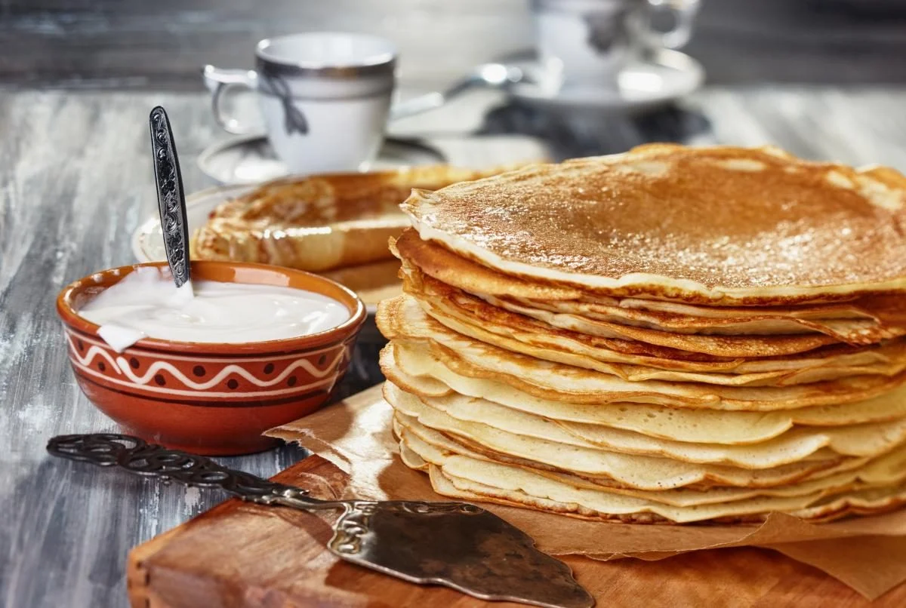

Рецепт млинців
Інгредієнти
- Молоко (2,6%) 1 л
- Яйця 4 шт.
- Борошно 500 г
- Олія 2 ст. л.
- Цукор 1,5 ст. л.
- Сіль 0,5 ч. л.
Процес приготування
- Підігріти 3 стакани молока і розчинити в ньому дріжджі.
- Додати 0,5 столової ложки цукру-піску, сіль, жовтки, розтоплене масло. Перемішати.
- Додати 300 г борошна.
- Замісити тісто. Накрити його полотенцем. На 2 години поставити в тепле місце для бродіння.
- Коли тісто підійде, розвести його залишеним підігрітим молоком.
- Додати решту муки і цукру.
- Збити білок і поступово влити його в тісто.
- Знову замісити тісто і дати йому підійти.
- Розігріти сковороду. Під час випічки перемішувати тісто не можна.
- Обсмажити млинець з обох боків до золотистого кольору.
Цікаве про млинці
Найстаріший рецепт млинців на молоці датується XV століттям. Поданий він
англійською
мовою
Найбільший млинець на молоці був випечений у 1994 році в місті Рочдейл. Його діаметр
становив 15
метрів, а вага — 3 тонни.
Щороку жителі американського містечка Спрінгфілд, штат Массачусетс, влаштовують справжній млинцевий бенкет.
Як говорить статистика, з початку святкування (а це з 1991 року) на сніданок подали більше 71 200 порцій
млинців, і більше 40 000 любителів млинчиків покуштували свої улюблені страви.
В Англії теж є свої цікаві свята, головним героєм в яких виступає млинець. Візьмемо, приміром, хоча б
Грішний вівторок. У цей день англійці влаштовують справжні млинцеві перегони. Головна умова — тримаючи
сковороду в руках, підкидати млинці і при цьому, звичайно ж, бігти. Такі перегони проводяться з 1445 року.
Слов'янські народи здавна святкують Масляну – зимове свято з веселощами, музикою і млинцями.
Maecenas lacinia felis nec placerat sollicitudin. Quisque placerat dolor at scelerisque imperdiet. Phasellus tristique felis dolor.
Maecenas elementum in risus sed condimentum. Duis convallis ante ac tempus maximus. Fusce malesuada sed velit ut dictum. Morbi faucibus vitae orci at euismod. Integer auctor augue in erat vehicula, quis fermentum ex finibus.
Mauris pretium elit a dui pulvinar, in ornare sapien euismod. Nullam interdum nisl ante, id feugiat quam euismod commodo. Sed ultrices lectus ut iaculis rhoncus. Aenean non dignissim justo, at fermentum turpis. Sed molestie, ligula ut molestie ultrices, tellus ligula viverra neque, malesuada consectetur diam sapien volutpat risus. Quisque eget tortor lobortis, facilisis metus eu, elementum est. Nunc sit amet erat quis ex convallis suscipit. ur ridiculus mus.